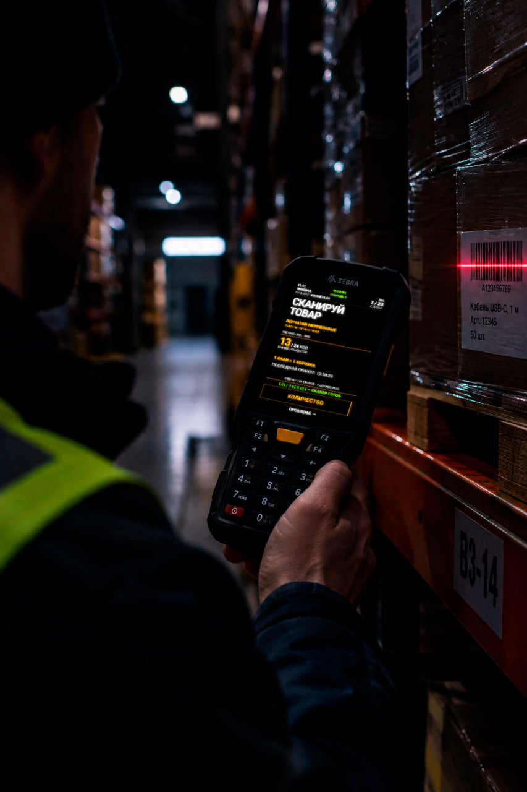
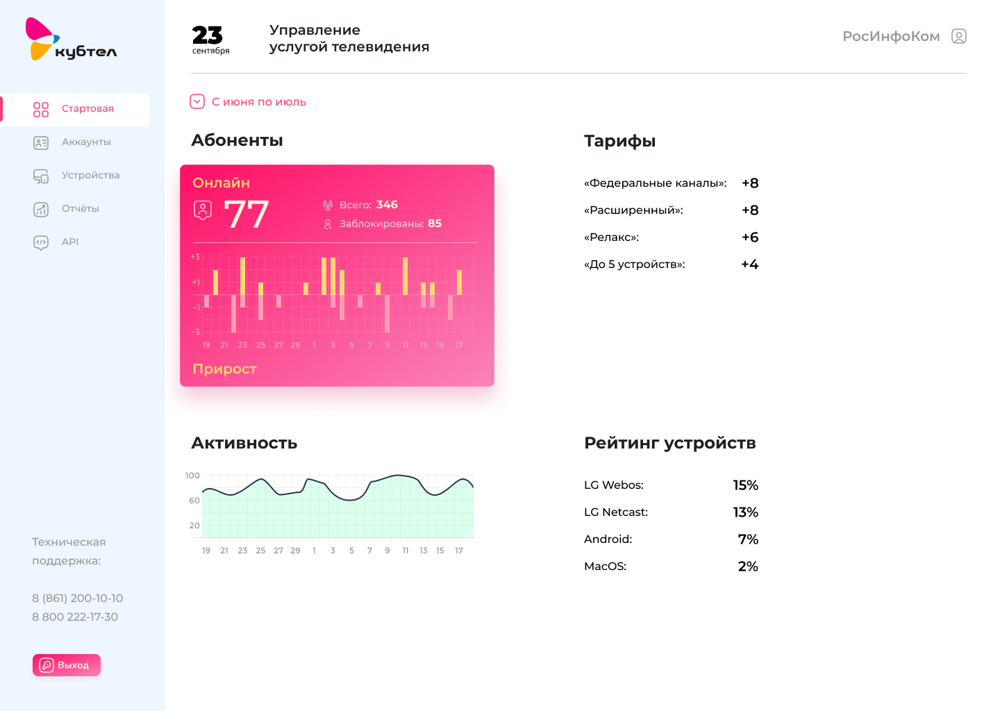
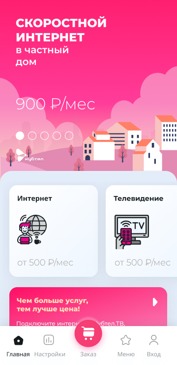

Разобраться в работе
Смотрю, что человек делает на самом деле: где ждёт, ошибается, возвращается назад или зовёт коллегу. Документация и аналитика помогают увидеть систему, наблюдение — реальную работу.
Product / UX Engineer · B2B и сервисные продукты
Нахожу место, где продукт подводит человека, разбираю причины и превращаю сложный процесс в понятную систему действий.
Избранные проекты
Складская операция с ошибками и потерей связи. Сайт провайдера с тарифами, оплатой и рабочими кабинетами. В каждом случае я связываю экран с конкретной задачей.

Спроектировал шесть экранов приёмки: от выбора задачи до места паллеты. Ошибка, товар вне документа и потеря сети ведут к разным понятным действиям.
Читать кейс ↗

Объединил сайт провайдера, мобильную оплату и кабинеты ТВ, Wi-Fi и телефонии в одной визуальной системе. В кейсе — 11 макетов и логика ключевых решений.
Читать кейс ↗Как я работаю
Я держу в одной связке пользовательский сценарий, правила продукта, технические ограничения и способ измерить результат.
Смотрю, что человек делает на самом деле: где ждёт, ошибается, возвращается назад или зовёт коллегу. Документация и аналитика помогают увидеть систему, наблюдение — реальную работу.
Перевожу наблюдение в конкретное решение: если изменить X, должно измениться Y. Так понятно, что именно мы проверяем и за что отвечают макеты.
Сначала прототип и UX-тест, потом пилот. Для запуска заранее определяю baseline, ключевую метрику и правило остановки.
Что я приношу в команду
Особенно полезен там, где простой экран скрывает сложные данные, роли и последствия.
Основной путь и всё, что происходит, когда он ломается.
Что уже произошло, что сохранено и какой шаг безопасен дальше.
Правила и компоненты, которые работают одинаково во всём продукте.
Понятный способ проверить, стало ли пользователю и бизнесу лучше.
Если задача сложнее, чем отдельный экран
Пылёв Юрий · Product / UX Engineer
Подключаюсь к B2B- и сервисным продуктам с непростыми процессами, интеграциями и высокой ценой ошибки.